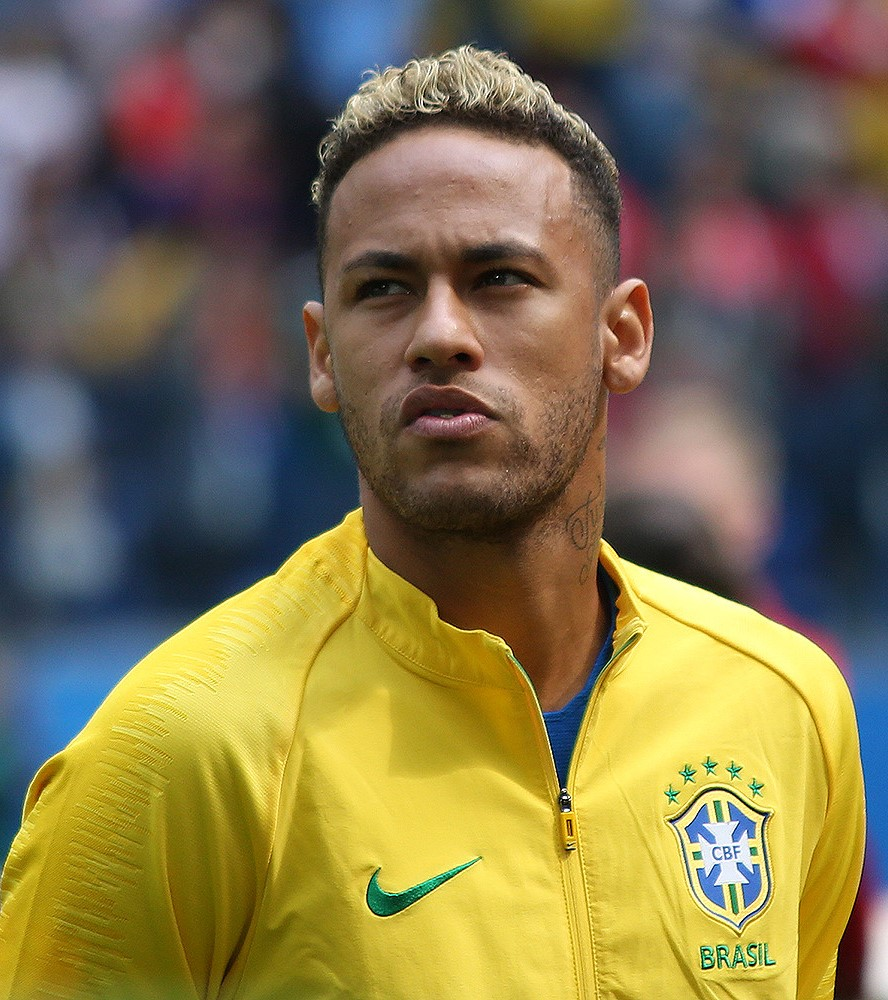

Neymar da Silva Santos Júnior (pronunciación en portugués: /nejˈmaʁ dɐ ˈsiwvɐ ˈsɐ̃tus ˈʒũɲoʁ/; Mogi das Cruzes, São Paulo; 5 de febrero de 1992), conocido como Neymar Júnior o simplemente Neymar, es un futbolista brasileño que juega como delantero en el Paris Saint-Germain F. C. de la Ligue 1 de Francia, y en la selección de fútbol de Brasil. Neymar surgió de las categorías juveniles del Santos, donde hizo su debut profesional a los 17 años. Considerado uno de los juveniles más prometedores del mundo, ganó tres Campeonatos Paulistas seguidos, una Copa de Brasil, y una Copa Libertadores, —donde fue máximo goleador y mejor jugador del certamen—, la primera del club desde 1963 con Pelé. En Brasil, empezó a hacerse conocido por sus regates llamativos, por haber ganado el Premio Puskás en 2011, y el Futbolista del Año en Sudamérica en 2011 y 2012. En 2013, fue transferido al F.C Barcelona, donde conformó un recordado trío en ataque junto al argentino Lionel Messi y el uruguayo Luis Suárez. Juntos, bajo el mandato de Luis Enrique, consiguieron el triplete, obteniendo La Liga, la Copa del Rey, y la UEFA Champions League 2014-15. Gracias a esto, logró salir tercero en la votación al Balón de Oro 2015. En 2016 obtuvo el doblete, y en 2017, sería transferido en el verano al equipo parisino por 222 millones de euros, convirtiéndose en el traspaso más caro en la historia del fútbol. En Francia, Neymar obtuvo tres títulos de liga, dos Copa de Francia y dos Copa de la Liga, obteniendo un triplete doméstico y siendo votado como el Jugador del Año de la Ligue 1 en su temporada debut. En la temporada 2019-20 obtuvo todos los títulos domésticos y llegó junto a su equipo a la final de la Champions League. Con 64 goles en 103 partidos con Brasil desde su debut a los 18 años, Neymar es el segundo máximo artillero de la selección, solo detrás de Pelé. Fue un jugador clave para la conquista del Sudamericano sub-21 2011 y la Copa Confederaciones 2013, donde fue elegido Bota de Oro. Sus participaciones en el Mundial 2014 y la Copa América 2015 fueron cortas debido a sus lesiones y expulsiones. Sin embargo, capitaneó al equipo sub-23 de la canarinha para su primera medalla de oro en los Juegos Olímpicos de Río 2016. En 2018 participó del Mundial de Rusia 2018 donde Brasil quedó eliminada en cuartos de final ante Bélgica. Fuera del campo, Neymar se volvió uno de los deportistas más lucrativos de los últimos años; SportsPro lo nombró el atleta con más marketing del mundo en 2012 y en 2013, y ESPN lo citó como el cuarto deportista más conocido del mundo en 2016. En 2017, Neymar fue incluido en la lista de Time de las 100 personas más influyentes del mundo. En 2018 France Football lo nombró el tercer futbolista más pagado del mundo. En 2019, Forbes lo posicionó como el tercer atleta más pagado del mundo, y el cuarto en 2020.
Nació en Mogi das Cruzes, São Paulo, Brasil. Es hijo de Neymar Santos Sr. y de Nadine Santos. Su padre también fue futbolista y se convirtió en asesor de su hijo. Ha hablado varias veces sobre él: Mi padre ha estado a mi lado desde que era pequeño. Él cuida de las cosas, mis finanzas y mi familia. Tiene una hermana llamada Rafaella Beckran y un hijo llamado Davi Lucca da Silva Santos, que tuvo a los 19 años. Durante su infancia, Neymar desarrolló su amor por el fútbol gracias al fútbol sala y el fútbol callejero, con el brasileño declarando más de una vez que el futsal lo ayudó a desarrollar sus técnica y habilidades para regatear en espacios pequeños. En 2003 se trasladó con su familia a São Vicente, donde empezó a jugar para las divisiones juveniles del Portuguesa Santista. Luego, en 2003, se trasladó a Santos, donde fichó por el Santos FC. Con el dinero ganado por sus éxitos en las categorías juveniles, con su familia compraron una casa al lado de Vila Belmiro, el estadio del club. Su calidad de vida familiar mejoró, ya que a los 15 años, ganaba 10.000 reales al mes y a los 16, 125.000. A los 17 firmó su primer contrato profesional y fue ascendido al primer equipo, además de empezar a firmar sus primeros contratos con patrocinadores.
El 23 de mayo de 2013, Santos anunció que había recibido dos ofertas por Neymar. El día siguiente, Neymar anunció que ficharía por el Fútbol Club Barcelona luego de disputar la Copa Confederaciones 2013 con Brasil. Ni Neymar ni el club revelarían detalles sobre el precio del fichaje ni los términos personales, solo se detallaron que fue un acuerdo por cinco años. El 3 de junio de 2013, Neymar fue desvelado por el Barcelona luego de completar la revisión médica y firmando el contrato que lo mantendría con el club hasta el 2018. Neymar fue presentado en el Camp Nou frente a 56 mil espectadores, un récord para un jugador brasileño. El vicepresidente del Barça, Josep Maria Bartomeu, reveló que el precio por el fichaje de Neymar fue de 57 millones de euros, y que tenía una cláusula de rescisión de más de 190 millones.
En enero del 2014, la fiscalía de Madrid empezó a investigar el precio del fichaje de Neymar por Barcelona. Los documentos presentados ante las autoridades demostraron que la información de los archivos era contradictoria. El 23 de enero, Rosell renunció a su cargo como presidente del Barcelona. Un día después, el club reveló los datos oficiales del fichaje, demostrando que se pagó 86.2 millones de euros, con los padres de Neymar confirmando que recibieron una suma de 40 millones de euros. En las secuelas de lo acontecido, Barcelona y Bartomeu fueron denunciados por fraude fiscal.
En el encuentro de la primera jornada de Liga 2013/14, Neymar hizo su debut en partido oficial, al entrar de cambio en el minuto 63 en la victoria por 7–0 frente al Levante UD. El 21 de agosto, marcó su primer gol oficial con el Barcelona en el primer partido de la Supercopa de España de Fútbol 2013 frente al Atlético Madrid, en el que fue su primer título con el club. El 18 de septiembre debutó en la UEFA Champions League, asistiendo a un gol de Gerard Piqué en la victoria del Barça por 4-0 contra el Ajax en el primer partido del torneo. Su primer gol en liga fue el 24 de marzo de 2013, en un encuentro contra la Real Sociedad, en una derrota 4-1. En su primer Barça-Madrid, el 26 de octubre de 2013, él fue el encargado de abrir el marcador en el minuto 19, siendo clave en la victoria blaugrana por 2-1. El 11 de diciembre, Neymar anotó sus tres primeros goles en la Champions League al anotar un hat-trick en la victoria por 6-1 sobre el Celtic en el último partido del Grupo H del Barcelona. A pesar de dar buenas primeras impresiones, el Barcelona tuvo una temporada paupérrima bajo las órdenes de Gerardo Martino, perdiendo todas las competencias importantes y el título de liga en la última jornada ante el Atlético de Madrid. Neymar anotó 9 goles en liga, y 15 en todas las competencias.
En la antesala del inicio de la temporada 2014-15, Martino fue destituido como entrenador, siendo designado el exjugador culé Luis Enrique. Junto a él, llegaron los fichajes de Ivan Rakitic, y del delantero uruguayo Luis Suárez, quien a posteriori, terminaría de conformar un histórico tridente compuesto por futbolistas sudamericanos, junto al argentino Lionel Messi y el propio Neymar. El 13 de septiembre de 2014, después de aparecer como un sustituto, Neymar marcó sus dos primeros goles de la temporada 2014-15, ayudando al equipo al derrotar al Athletic Club por 2-0. El 27 de septiembre, marcó un hat-trick ante el Granada Club de Fútbol en la victoria por 6-0 y pasó a marcar en sus próximos tres partidos de Liga, incluyendo el primer gol en la derrota 1-3 ante el Real Madrid en el Estadio Santiago Bernabéu. El 24 de enero de 2015, Neymar anotó dos goles y asistió dos goles más en la victoria por 6-0 al Elche Club de Fútbol. El 28 de enero, marcó su 20º gol de la temporada en la victoria de cuartos de final de Copa del Rey 3-2 sobre el Atlético de Madrid. El 4 de marzo, Neymar anotó doblete en la victoria 3-1 por las semifinales de la Copa del Rey ante el Villarreal Club de Fútbol para clasificar el club a su 37ª final de la competencia. El 21 de abril Neymar elevó su cuenta a 30 goles en la temporada al anotar dos veces en la victoria 2-0 en los cuartos de final de la Liga de Campeones de la UEFA al Paris Saint-Germain Football Club y clasificar para las semifinales. En mayo, el mes de cierre de la temporada, Neymar anotó el último gol en la victoria por 3-0 ante el Bayern de Múnich en el partido de ida de la semifinal de la Liga de Campeones. Una semana más tarde, marcó los dos goles del equipo en la derrota 3-2 en la vuelta en el Allianz Arena para así asegurar al Barça en la final de la Liga de Campeones de la UEFA. También abrió el marcador con un cabezazo en la victoria por 2-0 de la liga contra la Real Sociedad, resultado que le dio al Barça una ventaja de cuatro puntos sobre el Real Madrid con sólo dos partidos restantes. Después de asegurar el título de Liga el 17 de mayo con una victoria por 1-0 sobre el Atlético de Madrid en el Estadio Vicente Calderón, el Barcelona derrotó al Athletic Club por 3-1 en el Camp Nou en 2015 por la final de la Copa del Rey el 30 de mayo, con Neymar anotando el segundo gol para el Barça. El 6 de junio de 2015, Neymar anotó el tercer gol en el 3-1 de la final de la Liga de Campeones ante la Juventus de Turín en el Olympiastadion de Berlín, asegurando para el club su quinta Copa de Europa. Esto hizo que el Barcelona sea el primer equipo en la historia en ganar el triplete de Liga, Copa nacional y Copa de Europa dos veces. En una palmarés personal, se convirtió en el octavo jugador en la historia en ganar tanto la Copa Libertadores y la Liga de Campeones de la UEFA, y el primer jugador en marcar en las finales de ambas competiciones. Neymar terminó la temporada con 39 goles en todas las competiciones y 10 en la Liga de Campeones, siendo el máximo goleador de dicha competencia junto con Cristiano Ronaldo y su compañero de equipo Lionel Messi. La línea de ataque formada por Neymar, Messi y Luis Suárez terminó con 122 goles, siendo la cifra más elevada de una temporada para un equipo español.
Debido a que sufrió paperas, Neymar se perdió los dos primeros títulos de la temporada, la Supercopa de Europa y la Supercopa de España. El 17 de octubre, Neymar anotó cuatro goles en la victoria en casa del Barcelona 5-2 ante el Rayo Vallecano. Debido a la ausencia de Messi por dos meses tras lesionarse los ligamentos, Neymar y Suárez se hicieron cargo del ataque del equipo. El 8 de noviembre de 2015, por la jornada 11 de La Liga anotó un doblete frente al Villareal, siendo el segundo luego de dar un sombrero de espaldas a un defensor y rematando de volea. El 21 de noviembre de 2015, en el clásico español, anotó uno de los cuatro goles frente al Real Madrid y asistió en otro luego de dar un pase de taco a Andrés Iniesta. A fines de noviembre, luego de anotar un doblete a la Real Sociedad, Neymar llegaba registrado 14 goles en 12 partidos por liga. El 30 de diciembre del 2015, salió tercero en la nómina por el Balón de Oro, detrás de Messi y de Cristiano Ronaldo con un 7,86% de los votos, y fue incluido como uno de los integrantes del Mejor Equipo del Año. Finalmente, el Barcelona de Neymar terminó la temporada ganando dos títulos más, la Liga y la Copa del Rey, en una temporada en la que el brasileño no marcó tantos goles como en la anterior pero sí dio más asistencias a sus compañeros. La temporada 16-17 fue su última en el Barcelona, en donde ganó la Copa del Rey y fue un jugador clave en la remontada al Paris Saint-Germain en octavos de final de la UEFA Champions League, en la que marcaría dos goles para terminar con un 6-1 y pasar así a cuartos de final, en los que el Barcelona acabaría siendo eliminado por la Juventus de Turín. Finalmente, antes de su polémica salida Neymar jugó la pretemporada del Barcelona en Estados Unidos a las órdenes de Ernesto Valverde y acabaría anotando tres goles decisivos para proclamarse campeones de la International Champions Cup 2017.
Después de muchos días de incertidumbre, el día 3 de agosto de 2017 se confirma la llegada de Neymar al Paris Saint-Germain Football Club de la Ligue 1 de Francia siendo el traspaso más caro de la historia del fútbol tras pagarse su cláusula de rescisión de un total de 222 millones de euros. El Barcelona informó a la UEFA sobre tomar cualquier tipo de responsabilidad disciplinaria que podía llegar a ocurrir sobre este suceso. Según la BBC, en España la cláusula de rescisión debe ser activada por el mismo futbolista. La situación fue inusual ya que el dinero fue traspasado directamente al club, luego de que La Liga rechazara recibir el pago. Usualmente, el pago se deposita entre el club y la liga, para liberar al jugador de su contrato. Sin embargo, La Liga rechazó recibir este pago, violando la ley del Fair Play Financiero del PSG, cuyo dinero es sustentado por el estado de Catar.
Neymar fue presentado el 5 de agosto del 2017 en el Parque de los Príncipes, ante más de 40 000 espectadores. Se le cedió el dorsal número 10 de Javier Pastore como un regalo de bienvenida. Hizo su debut con Les Rouge-et-Bleu el 13 de agosto, anotando un gol y asistiendo en otro en la victoria por 3-0 sobre el Guingamp. En la siguiente fecha, Neymar anotó otros dos goles más a su cuenta contra el Toulouse. Formando un prolífico trío de atacantes junto al joven prodigio francés Kylian Mbappé y el delantero uruguayo Edinson Cavani, Neymar anotó en los dos partidos iniciales del PSG de la fase de grupos de la UEFA Champions League 2017-18, con el equipo ganando 5-0 al Celtic y 3-0 en casa sobre el Bayern de Múnich respectivamente. Durante la derrota por 3-0 contra el Olympique de Marseille el 25 de febrero de 2018, Neymar se fracturó el quinto metatarsiano del pie derecho. Viajó a Belo Horizonte y se sometió a una exitosa operación en su pie. No pudo hacer otra aparición con el PSG mientras se recuperaba de la lesión y, en consecuencia, terminó su primera temporada en París con 28 goles en apenas 30 partidos, consagrándose campeón de la Ligue 1, la Copa de Francia y la Copa de la Liga. El 12 de agosto de 2018, Neymar anotó el primer gol del PSG en la Ligue 1 2018-19 en la victoria por 3-0 sobre el Caen en el Parc des Princes. Sin embargo, volvió a sufrir otra lesión en el pie a fines de enero de 2019 que lo mantuvo fuera de la eliminatoria de octavos de final de la Liga de Campeones de su equipo contra el Manchester United F.C. Después de que el United eliminó al PSG, Neymar insultó en Instagram a los funcionarios del VAR por otorgar un penal en el tiempo de descuento al United. La UEFA sancionó a Neymar durante tres partidos por el insulto. El 27 de abril de 2019, Neymar marcó en la final de la Copa de Francia de 2019 contra el Rennes, pero estos acabarían remontando y ganando en los penaltis. Después del partido, Neymar fue captado en un video que parecía golpear a un espectador en la cara. El espectador había estado filmando e insultando a los jugadores del PSG. El club dijo que apoyaba a Neymar "al 100 por ciento" por el incidente. Neymar admitió que estaba equivocado, pero argumentó que ni él ni nadie más podrían haberse quedado indiferentes. El técnico del PSG, Thomas Tuchel, respondió: «No es fácil subir las escaleras después de una derrota. Si perdemos, debemos mostrar respeto. No se puede entrar en conflicto con un espectador».
En julio de 2019, Neymar estuvo ausente de los primeros entrenamientos con el PSG, y el club habló de medidas disciplinarias. Antes de la fecha límite de transferencia a fines de agosto, Neymar acordó quedarse en el PSG después de que se rompieron las conversaciones sobre un posible regreso al Barcelona. Neymar hizo su primera aparición con el PSG en la temporada 2019-20 el 14 de septiembre de 2019, en la victoria por 1-0 sobre el Estrasburgo en la Ligue 1. Marcó el gol de la victoria en el tiempo de descuento de la segunda parte con una chilena. Una semana después, volvió a anotar un gol sobre el final, en el partido en el que el PSG derrotó al Lyon por 1-0 en el Parc Olympique Lyonnais. Volvió a sufrir una lesión en el tendón de la corva en octubre mientras estaba con la selección de Brasil, y volvió a jugar con el PSG durante el partido de la fase de grupos de la Liga de Campeones contra el Real Madrid el 26 de noviembre en un empate 2-2. El 18 de febrero de 2020, en los octavos de final de la Liga de Campeones contra el Borussia Dortmund, marcó un gol de visitante crucial en el partido de ida en el Signal Iduna Park, ya que el PSG perdió 2-1. En el partido de vuelta, el equipo de Neymar remontó al Dortmund ganando el partido 2-0 (3-2 en el global). Marcó un cabezazo de un córner de Ángel Di María y también realizó una jugada que llevó a su compañero, Juan Bernat, a marcar el segundo gol. Neymar ganó su tercer título de liga después de que el PSG obtuviera la Ligue 1, ya que la temporada terminó temprano debido a la pandemia de COVID-19. El 24 de julio de 2020, en el primer partido profesional del Paris Saint-Germain después de la pandemia, Neymar anotó el único gol de su equipo en la victoria por 1-0 sobre el Saint-Étienne en la final de la Copa de Francia, ganando su segundo título de la competencia con el club. El 31 de julio, el Paris Saint-Germain ganó la final de la Coupe de la Ligue 2020 por 6-5 en los penaltis sobre el Lyon, luego de un empate 0-0 en la prórroga, en el que el equipo completó un triplete nacional, con Neymar anotando uno de los penaltis. En los cuartos de final de la Liga de Campeones contra el Atalanta el 12 de agosto, asistió el gol del empate en el tiempo de descuento en una eventual victoria por 2-1. En la semifinal contra el RB Leipzig, asistió a un gol en la victoria por 3-0, que hizo llegar al PSG a la final de la Liga de Campeones por primera vez en su historia; El equipo finalmente perdió 1-0 ante el Bayern de Múnich el 23 de agosto.
Neymar se perdió el primer partido de la temporada 2020-21 porque había dado positivo por COVID-19 una semana antes; El PSG perdió el partido contra Lens por 1-0. Sin embargo, volvió a los entrenamientos antes del partido contra el Marsella el 13 de septiembre de 2020. El PSG perdió el Le Classique por primera vez desde 2011 cuando el OM ganó 1-0 en un partido que tuvo 14 tarjetas amarillas y 5 tarjetas rojas entregadas por el árbitro, incluida una de cada una a Neymar. Se vio envuelto en un altercado con Álvaro González en el minuto 97 del partido, en medio de una trifulca que estalló entre los jugadores del PSG y del OM, en donde Neymar denunció haber sido abusado racialmente por Álvaro, luego de ser expulsado por golpearlo en la nuca. Posteriormente, Neymar respondió en las redes sociales, ya que el defensa español negó haber hecho comentarios racistas durante el partido. El 16 de septiembre, Neymar recibió una sanción de dos partidos por sus acciones; La LFP también inició una investigación sobre los supuestos comentarios racistas de Álvaro. Varios días antes de la decisión tomada por la liga francesa, la emisora de radio española Cadena SER afirmó tener imágenes de Neymar abusando racialmente del jugador OM Hiroki Sakai. El 30 de septiembre, la LFP decidió que ni Álvaro ni Neymar recibirían suspensiones, porque las pruebas de sus delitos eran insuficientes. Además, al día siguiente del fallo, Sakai negó en las redes sociales que Neymar hubiera hecho comentarios racistas hacia él. Neymar anotó sus dos primeros goles de la temporada en la victoria por 6-1 contra Angers el 2 de octubre, que lo hizo entrar en la lista de los diez máximos goleadores de la historia del PSG al ponerse a la altura de Raí con 72 tantos. El 28 de octubre, Neymar sufrió una lesión en el aductor en un partido contra el İstanbul Başakşehir, y abandonó el terreno de juego después de 26 minutos de juego. Regresó a la acción como suplente en la derrota por 3-2 ante el Mónaco el 20 de noviembre y marcó su primer gol tras recuperarse de su lesión en la victoria por 1-0 ante el RB Leipzig en la UEFA Champions League el 24 noviembre. El 28 de noviembre, Neymar anotó su gol número 50 en la Ligue 1, convirtiendo un penalti en el empate 2-2 del PSG contra el FC Girondins de Bordeaux. Esto lo convirtió en el jugador más rápido en la historia del club en alcanzar 50 goles en liga, al hacerlo en solo 58 partidos. Cuatro días después, el 2 de diciembre, marcó dos goles en la victoria por 3-1 de la Liga de Campeones contra el Manchester United en Old Trafford. En el último partido del grupo del PSG, Neymar anotó el tercer triplete de su carrera en la Liga de Campeones contra el İstanbul Başakşehir, ya que su equipo ganó 5-1 y se clasificó para la fase eliminatoria como ganadores de grupo. Se convirtió en el primer jugador en la historia de la Copa de Europa y la Liga de Campeones en marcar 20 goles para dos clubes diferentes, marcando 21 goles con el Barcelona en 40 partidos y 20 con el PSG en 25 partidos. En la derrota por 1-0 ante el Lyon el 13 de diciembre, Neymar sufrió una lesión en el tobillo tras una entrada de Thiago Mendes y tuvo que ser retirado del campo en camilla. Evitó una fractura, pero estuvo fuera de acción durante tres semanas debido a un esguince. Su regreso resultó ser exactamente un mes después de su lesión, el 13 de enero de 2021, en la victoria por 2-1 sobre el Marsella en el Trophée des Champions, con Neymar anotando el gol de la victoria de penalti.